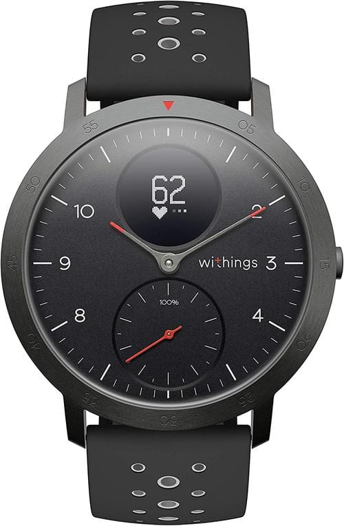

Withings Steel HR

指针加小窗的法式优雅，续航一个月的健康表。
客观评测
Steel HR 是混合式智能手表的代表作：传统时分秒指针搭配 12 点位的小 OLED 副屏，可循环显示步数、心率、通知与闹钟。内置光学心率与加速度计，支持 30 余种运动模式与睡眠分期，实测静息心率与步数统计稳定。316L 不锈钢表壳配 50 米防水，续航约 25 天。定位依赖手机，适合以健康记录为主、偶尔运动的用户。
主观点评
Steel HR 是少数能搭配衬衫袖口的"智能表"，不亮屏时没人知道它在偷偷记录心率。小窗里滚动的数字有种机械与电子混搭的浪漫，续航一个月更是治愈电量焦虑。Withings 的健康 App 图表干净漂亮，与体脂秤数据联动后能看清长期趋势。它不争不抢，把科技藏进经典表壳里，是低调派的心头好。
优点与不足
- 真指针设计，正装休闲两相宜
- 续航近一个月，省心
- 健康数据与 Withings 体脂秤生态打通
- 副屏极小，通知只能看摘要
- 无独立 GPS
- 运动功能相对基础
参数规格
| 屏幕 | OLED 小窗副屏 + 传统指针 |
|---|---|
| 传感器 | 光学心率传感器、加速度计 |
| 定位 | 不支持（借用手机 GPS） |
| 防水 | 5ATM（50 米防水） |
| 电池/续航 | 约 25 天 |
| 系统 | Withings 自有系统 |
| 兼容性 | iOS / Android |
| 功能 | 心率监测、睡眠监测、步数、通知小窗、30+ 运动模式 |
| 表壳 | 316L 不锈钢表壳 |
| 重量 | 约 49 克 |